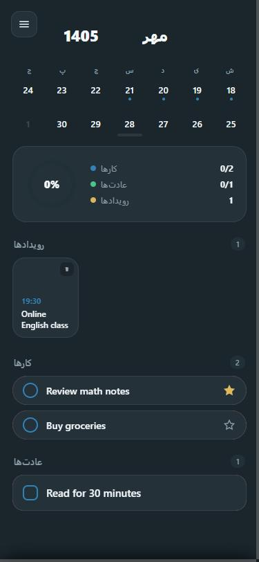
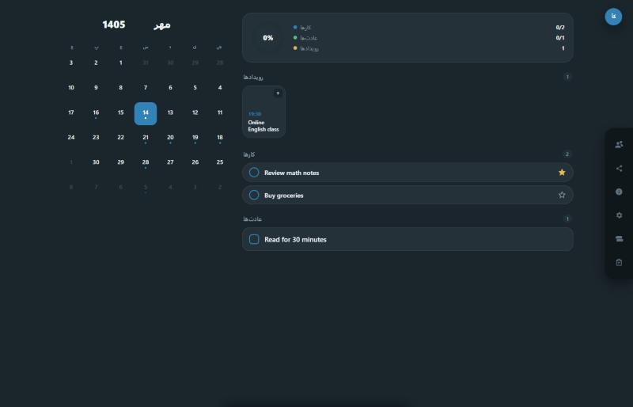

کار
کارهای روزتون رو بسازید و پیگیری کنید — بدون انتقال خودکار به روز بعد اگه انجام نشن.
توجیبی کار، عادت، رویداد و تقویم روزانهتون رو بهجای چند اپ جدا، تو یه تجربهی ساده و آروم کنار هم نگه میداره.

توجیبی کار، عادت و رویدادهاتون رو با تیکزدن و تقویم روزانه/هفتگی/ماهانه، یکجا جلوی چشمتون میذاره.
کارهای روزتون رو بسازید و پیگیری کنید — بدون انتقال خودکار به روز بعد اگه انجام نشن.
عادتهای تکرارشونده رو با تیک روزانه دنبال کنید.
همهی کارها، عادتها و رویدادها در یک تقویم روزانه/هفتگی/ماهانه.
رویدادهای زماندار با یادآوری قابل شخصیسازی.
همون طراحی واقعی که تو نسخهی پیشنمایش وب میبینید — نه یه مدل ساختگی.

با یه دکمهی شناور، در عرض چند ثانیه یه آیتم جدید میسازید — بدون فرمهای طولانی.
کارها، عادتها و رویدادها کنار هم، روی نمای روزانه، هفتگی یا ماهانه — نه در سه اپ جدا.
تیک بزنید، پین کنید، یادآوری تنظیم کنید. کار انجامنشده گم نمیشه، فقط صبر میکنه.
هدف توجیبی جمعکردن کار، عادت، رویداد و تقویم زیر یه سقف واحده — نه یه اپ تقویم دیگه.
بهجای جابهجایی بین یه اپ لیست کار و یه اپ عادت جدا، همهشون کنار هم روی یه تقویم دیده میشن.
یه کار انجامنشده خودکار به روز بعد منتقل نمیشه — فقط وضعیتش ثبت میمونه، شما تصمیم میگیرید.
پیشنمایش وب مستقیم تو مرورگرتون باز میشه — نیازی به ثبتنام یا دانلود چیزی نیست.